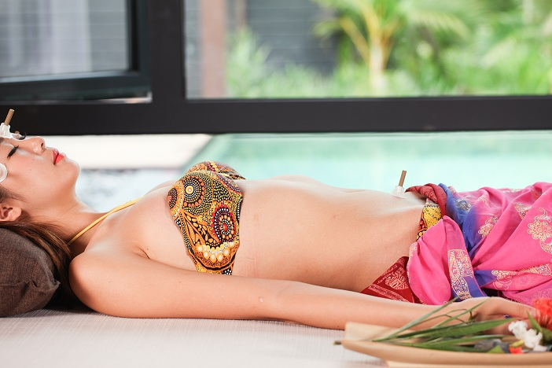
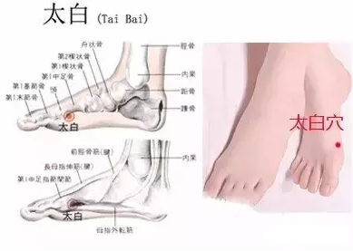

艾灸为什么要讲究节气?“节气灸”指在特定的时令节气进行艾灸以温壮元阳、激发经络之气、调动与开发机体潜能、健身防病的传统方法。“节气灸”以其简、便、验的优势，为我国历代医家及百姓沿用至今在防病保健领域占有特殊的地位。

人体也有春夏秋冬
早在春秋战国时期的《内经》中就指出，人体脏腑、气血随着节气变化，会出现周期性盛衰，如春温，夏热，长夏湿，秋凉，冬寒。一年中节气更迭，人体阳气中有升、浮、沉、降节律。脉搏有春浮，夏洪，秋弦，冬沉。人体形成春生，夏长，长夏化，秋收，冬藏规律。人体脏腑功能活动与自然界四时阴阳消长节律统一起来，形成五时应五脏，阴阳消长同步的有机整体。
健康离不开“正气”
中医理论认为：人体是一个复杂的开放系统，对外界的影响不仅有被动的适应能力，也有主动的调节能力。人体的这种适应与调节能力称之为“正气”，它是决定疾病是否发生的内在因素，所谓“正气存内，邪不可干。”“邪之所凑，其气必虚。”因此，要想避免人体遭受各种致病因素的侵害，就必须增强机体“正气”。
节气更替正气波动
中医将疾病的发生过程视为一个整体，认为机体经络气血的变化规律若与自然四时节令之气不能同步适应，从而造成经络气血紊乱并诱发疾病。
临床上，节气或四时的更替交接之时，是阴阳之气变动剧烈之际，也是年老、体弱、虚衰的人群加重病情、诱发宿疾或易生新病的时期。比如夏至、冬至前后是中风、溃疡及哮喘等高发之时。
节气艾灸事半功倍
假若能在阴阳之气剧烈变动的时刻，应用某种简便的方法扶助正气，激发机体的潜在的顺应能力或应变能力，则有助于防病保健。因此，“节灸”正是体现中医的这种“因时制宜”加强机体整体机能的有效方法。
《黄帝内经·素问》指出：“春夏养阳，秋冬养阴”。秋季是艾灸的好时节，因为秋冬消耗人体的阳气多。这时候就更很需要及时补充阳气，以备一整个冬天的使用!
有的人在艾灸的过程中，往往会大汗淋漓，湿透床单，艾灸一次出一次大汗，有许多顾客很顾虑，如此出汗身体是否会虚脱?会不会对身体有害?
这种现象是艾灸改善体质、扶正祛邪、祛病疗疾的效果反应，无需顾虑继续施灸，随着施灸的药力不断增强，排出的浊水、浊气、废血越来越多，脏腑逐渐恢复功能，许多顾客伴随疲劳、头晕、失眠、旧病复发、疼痛、上火、长痘、起泡、全身长红疹、肌肤瘙痒、发烧、长时间类似感冒症状、怕冷、全身浮肿、脾气越来越急躁，等许多不舒服的难受症状。
这是艾灸之火力、药力使隐藏在脏腑深处疾患，功拔到体表，但还没有完全排出体外的表现症状，是非常好的效果体现。正所谓《扁鹊新书》所说：“温养阳气，禁戒寒凉。以灼艾为第一。”
用艾之火力艾灸，能透入到肝脏、脾脏、肾脏、心脏、肺脏，能温通人体十二经络，经络通畅，气血运行，病邪自然退去，身体康复如同反手掌一样简单。
艾灸疗法使人体大量出汗，排出的是脏腑、血液和细胞里的浊水，与汗蒸、桑拿、烤电、泡浴、运动…等发热出汗完全不同，排出的汗水深度位置完全不同。
而汗蒸、桑拿、烤电、泡浴、运动…等发热出的汗表层肌肤的汗水，这种汗出的太多会耗损人体的精、津、液和元气，人体会虚脱。
艾灸疗法作用是，恢复并强大脏腑功能，此时占据脏腑的病邪(浊水消耗人体血液，是上火、炎症的主因;浊气消耗人体元气，阻塞经脉，是肿瘤、肌瘤、结块的主因)被强大的正气赶出脏腑，排出体外，这就是顾客施灸时大汗淋漓的表现。
另外，艾灸疗法是先补充脏腑正气，艾灸到一定时间和数量后，脏腑元气充足，功能恢复，人体元气和艾的纯阳之火联合作用，使体内病邪(浊水、浊气)通过经络、血管、关节、皮肤毛孔，使体内的病邪之气以汗液和放屁、打嗝的形式不断地排出。
这就是施灸时许多顾客，特别是风湿，心脑血管，肝胆病，糖尿病、胃肠病、哮喘、肺病、肾病、妇科、男科、三高、肿瘤、贫血、虚寒体质、长期吃药、激素药…等慢性病的好转反应。
立夏艾灸培补元气
大椎穴：保健要穴、主宰全身
《甲乙经》说过“大椎，三阳，督脉之会”，大椎穴又称“督阳之海”，能主宰全身，更是保健要穴。所以按摩、艾灸等可以起到提高人体免疫力,改善肺功能的作用。
取穴：人体的颈部下端，第七颈椎棘突下凹陷处。若突起骨不太明显，让患者活动颈部，不动的骨节为第一胸椎，约与肩平齐。
太白穴：补充气血、美容养颜

太白是脾经的原穴，健脾补脾效果比其他穴位都强。脾经为少气多血之经，气不足、血有余，微信：艾灸之家，所以脾经常出现脾气虚的症状，我们常说的黄脸婆就是脾虚的象，每天按摩这个穴位能较好地充补脾经经气的不足，为脾经经气的供养之源。
取穴：在足内侧缘，当足大趾本节(第1跖趾关节)后下方赤白肉际凹陷处。
关元穴：理气和血,补虚益损
关元是小肠的募穴。意味着它是小肠的气积聚在腹部的穴位。《扁鹊心书》里面的，“每夏秋之交，即灼关元千柱，久久不畏寒暑”，艾灸关元,不但可以疏通脉络、强壮腰脊,还可以很好地理气和血,补虚益损。不方便艾灸的可以每日围绕关元穴顺时针方向按摩。
取穴：位于下腹部，前正中线上，脐下3寸，是元气出入的关卡。
上一篇：艾灸需要坚持，请不要动不动都问能否“根治” 下一篇：中医文化博大精深，看看古人怎么记载艾灸